Uma landing
sobre transparência.
Nothing Ear — do DNA da marca ao código, sem uma única cor de destaque.
Traduzir o DNA da Nothing numa página que se sustenta sem cor.
Transparência radical, contenção industrial e tipografia dot-matrix — levadas de um estudo de marca a uma landing page real, desenhada no Figma e construída à mão.
Projeto conceitual. Não afiliado à Nothing Technology. Imagens geradas por IA.
Uma linha contínua — do estudo de marca
ao deploy, sem troca de mãos.
Estudo
de marca
DNA · dot-matrix · voz
Figma
grid · tokens · 1440
Código
HTML · CSS · JS puro
Motion
reveals · scrollspy
Figma, de novo
reconstruído via MCP
design e código pela mesma pessoa: o que foi desenhado é exatamente o que foi construído
Aa
Space Grotesk
Display e texto. Geométrica, industrial,
a voz que fala.
Light · Regular · Medium · SemiBold · Bold
45
Space Mono
Dados e rótulos. Monoespaçada,
a voz que mede.
SEM SEGREDOS · 45 DB · LHDC V5 · IP52
Nenhuma cor de destaque.
A identidade segura a página.
#000000
Preto
#0A0A0A
Tinta
#5F5F5F
Cinza 37
#6A6A6A
Cinza 42
#9B9B9B
Cinza 61
#FFFFFF
Branco
o vermelho no produto é do hardware, não da interface — a página inteira opera em preto, branco e três cinzas
1920 — apresentação
1440 — canônico
393 — mobile
(troque este print emoldurado)

abertura editorial: a fotografia segura o peso, o scrim garante a leitura
título em 144px com tracking −4% — a escala é a hierarquia

o produto invade a seção anterior em −204px — profundidade sem sombra falsa
o título transborda de propósito sobre a área transparente do PNG
Transparência levada até a ficha técnica —
a marca que expõe o hardware expõe os dados.


rótulos mono + valores grotesk, hairlines de 13% — informação como interface
o CTA "ver especificações completas" finalmente tem um destino real

full-bleed com proporção travada na da foto — nada é cortado em nenhuma largura
scrim preto em duas direções: legibilidade sem esconder o fone no pescoço

01 Hero — som que dá para ver
02 Destaques — 4 números, hairlines
03 Design — hardware como assinatura
04 Especificações — sem segredos
05 Som — mais detalhe, menos ruído
06 Fechamento — não é só mais um fone
07 Footer — transparency as trust
a alternância preto/branco/preto marca os capítulos; a ficha branca é a pausa entre o produto e o som
(e laptop no 1440, se quiser)

1920 — o design respirando
1440 — o canônico

393 — mobile

produto primeiro

ficha em coluna única

menu takeover
não é o desktop espremido: a ordem muda, os botões viram full-width, a nav vira takeover
(sobe como módulo de vídeo no behance)
Som que dá
t=0 · opacity 0 · y+20
Som que dá
t=0.3s · ease-out
Som que dá
t=0.8s · assentado
→ transform / opacity apenas — nada de layout
→ cubic-bezier(0.23, 1, 0.32, 1) — ease-out forte
→ gatilho por seção (data-trigger) — a coreografia toca na tela, não fora dela
→ prefers-reduced-motion → tudo estático · failsafe de 3s → nunca prende conteúdo
O mesmo design, duas fontes da verdade —
e o arquivo Figma foi reconstruído a partir do código, via MCP.

figma — auto-layout, texto real, fills reais
código — html/css/js puro, em produção
mesmo grid de 12 · mesmos tokens · mesma escala tipográfica — medido, não estimado
quem abre o arquivo encontra grid configurada, camadas nomeadas e 3 viewports
Métricas honestas,
como manda a marca.
Obrigado.
Feito para ser visto — e agora, visto por você.
Design & código — Luiz Correia · Product Designer · 2026